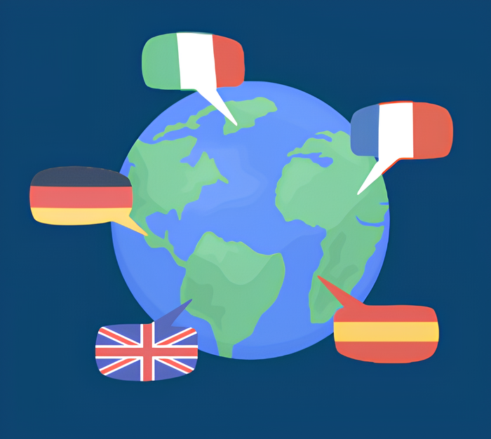
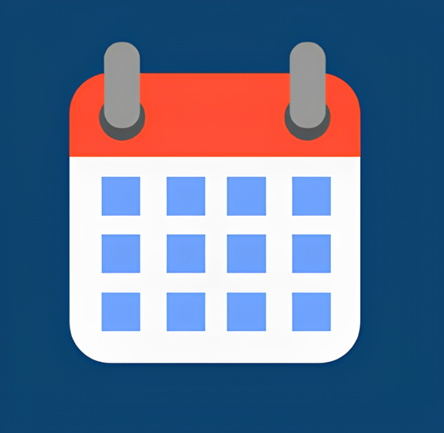
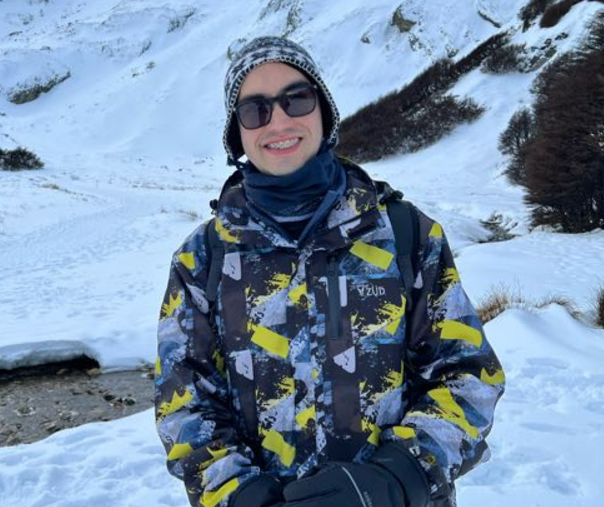

Dê voz às suas mãos e
ouvidos
aos seus olhos
Descubra a beleza da Libras
Sobre o Projeto
Por que Entre Sinais?
Este projeto nasce de uma conexão pessoal
e vivencial com a Língua de
Sinais, que se
intensificou ao longo dos anos ao formar
laços com a comunidade surda.
Inspirado
por essa convivência e pelo desejo de ampliar
a inclusão, Entre Sinais visa criar um
espaço
acolhedor onde todos, independentemente da
sua experiência com a língua, possam aprender,
se comunicar e se integrar.
População Surda
10,7 milhões
de brasileiros têm deficiência auditiva

2,7 milhões
são surdos ou escutam muito pouco

CURIOSIDADES

Libras é reconhecida por lei!
Desde 2002, a Língua Brasileira de Sinais é oficialmente
reconhecida como meio legal
de comunicação e expressão no Brasil (Lei nº 10.436).
Cada país tem sua própria língua de sinais.
Assim como as línguas faladas, as línguas de sinais variam ao redor do mundo. Por exemplo,
a American
Sign Language(ASL) é diferente da Libras.

Sinais regionais existem!
Assim como sotaques em línguas faladas, existem
variações regionais na Libras. Uma
palavra pode ter
sinais diferentes dependendo da região do Brasil.

Sinais podem mudar com o tempo!
Assim como as línguas faladas evoluem, a Libras também passa por mudanças ao longo do
tempo. Alguns sinais antigos podem cair em desuso ou serem substituídos por
novos, refletindo as transformações
culturais e sociais da
comunidade.

Embora muitas pessoas pensem que existe uma língua de
A língua de sinais não é "universal".
Embora muitas pessoas pensem que existe uma língua de
sinais universal, cada
comunidade surda desenvolve sua
própria língua de acordo com sua cultura e necessidades.

A comunicação vai além das mãos.
Na Libras, expressões faciais e movimentos corporais
são essenciais para transmitir
emoções, intenções e gramática.
A Libras tem sua própria gramática.
A estrutura gramatical da Libras é única e não segue as regras do português. Por exemplo,
a ordem das palavras é diferente,
priorizando o verbo e os conceitos mais importantes.

O Dia Nacional dos Surdos é comemorado em 26 de setembro, marcando
Datas importantes para a comunidade surda.
O Dia Nacional dos Surdos é comemorado em 26 de setembro, marcando
a luta por
direitos e reconhecimento.
Alfabeto em Libras

A
B
C
D
E
F
G
H
I
J
K
L
M

N
O
P
Q
R
S
T
U
V
W
X
Y
Z
RECOMENDAÇÕES
Neto Libras
Neste canal você aprende tudo
sobre Língua Brasileira de Si-
nais.
Libras para iniciantes,
Libras intermediário, conteúdo
de Libras avançado e muito mais
Academia de Libras
Te ensina tudo que você precisa
saber sobre Libras para praticar
a
inclusão social e para se desen-
volver profissionalmente.
Escola Virtual Gov
Conjunto de serviços disponibili-
zados em um Portal Único de Go-
verno. O Portal oferece um catá-
logo
de cursos unificado das prin-
cipais escolas de governo e centros
de capacitação da Administração
Pública, incluindo Libras.
Hand Talk

Hand Talk é uma plataforma que
traduz simultaneamente conteúdos
em português para a Língua Brasi-
leira de Sinais (Libras) e tem por
objetivo a inclusão social de pes-
soas surdas.
SOBRE MIM
Desde pequena, a Libras sempre me fascinou. Eu ficava encantada ao observar as
traduções simultâneas que aconteciam nos cultos da igre-
ja. Em 2022, minha vida tomou um rumo especial quando eu
e minha
família nos mudamos para São Paulo. Passei a estudar na mesma sala
que um colega surdo, e, ao longo
do ano letivo, construí uma amizade significativa tanto com ele quanto com o intérprete. Esse convívio me
aproximou ainda mais da comunidade surda, ampliando minha rede de amizades dentro desse universo tão rico.
Inspirada por essa experiência transformadora, desenvolvi este projeto com o propósito de dar mais vi-
sibilidade
à comunidade surda e fortalecer a valorização da Libras em nossa sociedade.
Atualmente tenho 18 anos,
moro em São Paulo e curso
Análise e Desenvolvimento
de
Sistemas na SPTech (São
Paulo Tech School).
DEPOIMENTOS

"Como intérprete de Libras, sou um elo entre mundos que compartilham
"Como intérprete de Libras, sou um elo entre mundos que compartilham
a mesma humanidade,
mas se expressam de formas diferentes. A Língua
Brasileira de Sinais é mais do que um idioma; é uma ponte para
inclusão,
respeito e acesso à informação. Aprender Libras é abrir portas para uma
sociedade mais igualitária e
acolhedora."
- Marcos
"Ser intérprete de Libras é dar voz às mãos e traduzir histórias que preci-
sam ser ouvidas.
Cada sinal carrega cultura, identidade e sonhos. A Libras
é a linguagem da inclusão, que transforma barreiras em
oportunidades para
uma comunicação sem limites."
- Magnus
"Ser intérprete de Libras é mais do que traduzir palavras; é traduzir emoções,
sonhos e
histórias. Cada gesto que interpreto é uma chance de aproximar pes-
soas, de tornar visível o que antes
parecia distante. É a arte de transformar co-
municação em inclusão."
- Marta